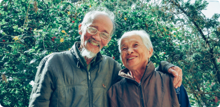
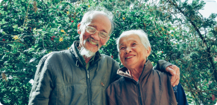

WATCH THE VIDEO
- ✔ Needs Assessment
-
The Advocacy Evaluation Toolkit contains the instruments used to collect data for evaluating the Consumer Voices for Coverage program.
- ✔ Insurance Advocacy
-
These instruments are designed to collect data on the activities of the Consumer Voices for Coverage program.
- ✔ Treatment Planning & Placement
-
They are also designed to collect data on the outcomes of the program, including the impact of the program on the advocacy skills of the participants.